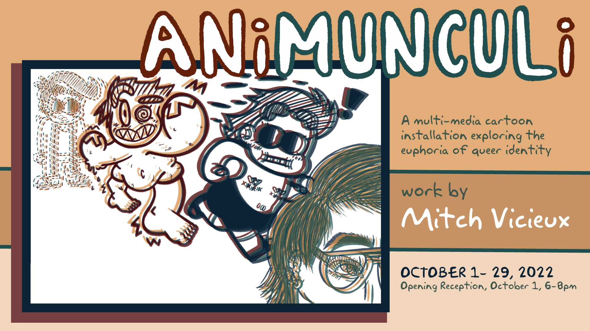
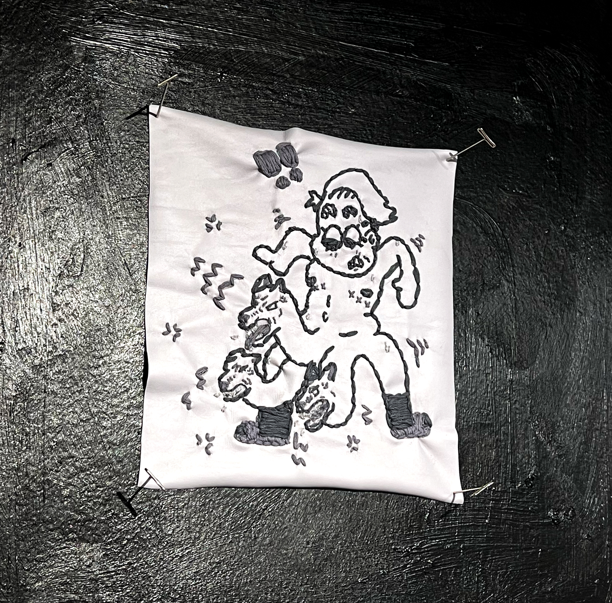
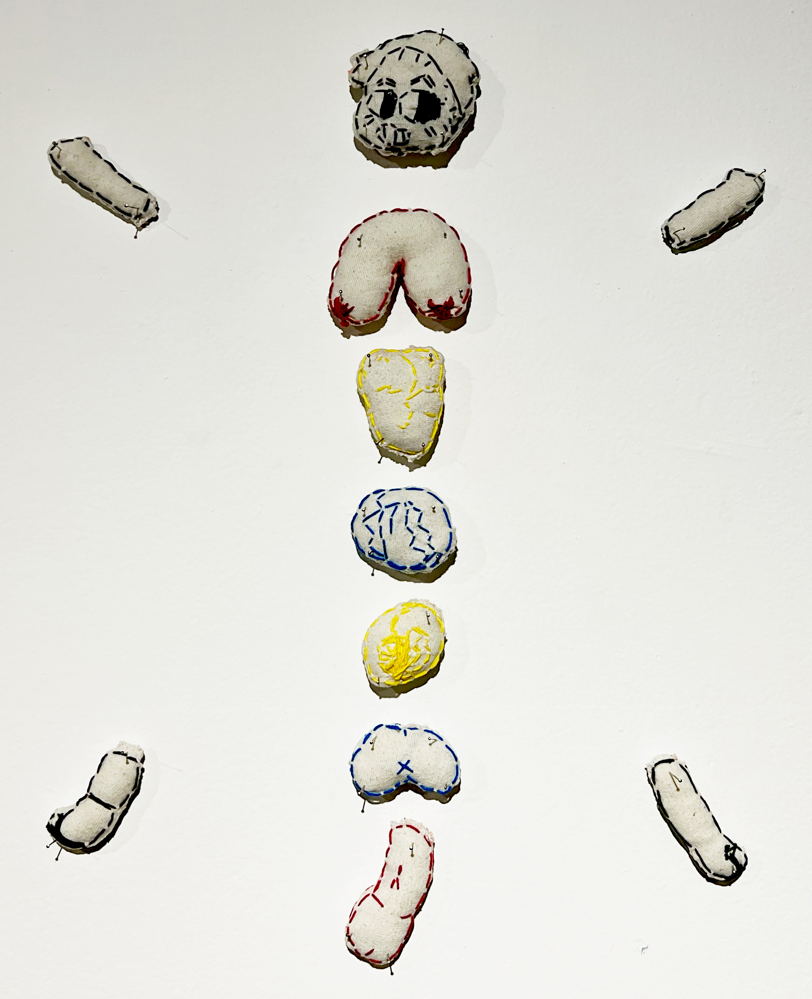

Animunculi

Bits, and bobbles, and bodies- oh my! Join us in the revelry of Animunculi, a multi-media cartoon installation exploring the euphoria of queer identiy. Transforming my avatar across sculpture, textile, and moving image, this body exudes motion, momentum, and metamorphosis. With the joy of body modification more prevalent and accessible than ever before, this work asks, what is so monstrous about transition? Entering this installation, I urge viewers to let go of ideas about what a body should be, and consider the joy of possibility embodied in queer identity.
Solo exhibition installed at Blockfort . Columbus, OH (October 2022)


{kind=link}
{kind=link}
Comedy of Body
Hand-drawn 2D Animation
2022
The “rubber hose” animation of Steamboat Willie and the Fleischer Brothers characterizes the potential of transformation. Bouncing and squashing and stretching across frames, they embody the euphoria of mortal transition. The capacity to change is a constant blessing, one to experience with revelry. Referencing the slapstick comedy and farcical narratives of early American animation, this compilation laughs at the grotesque discomfort of our bodies and revels in the ways they grow and change.


Technicolor Timeline
Crochet with reclaimed textiles
2017-2022
Since 2017, my partner and I have transitioned in multitudinous ways: gender, sexuality, presentation, style, perspective. Our loved ones joke that we trade-off genders each year. There’s a joyous humor to this back-and-forth. During this rhythmic cycle, I’ve collected our clothing and converted them into balls of yarn, crocheting the cord into a visual map of our transitions. Cartooning often represents time in a literal sense, with animations ticking down a timeline and comics building narrative page after page. This piece converts textile work into a time-based narrative while providing a historical archive of our playful metamorphosis.


{kind=link}


Super Stitch Me
Embroidery on denim, fleece, minky, satin, and rubberized fabric
2021
Much of the discomfort I’ve felt with my body relates to the label of “woman”. I often felt insecure about the perceived femininity of my hobbies, including embroidery. Instead of rejecting the pleasure in this practice, I thought to subvert the final product. Instead of neatly-stretched embroidery hoops on a well-decorated mantle, the floss becomes comic panels, visualizing my discomfort in stitched caricature. These figures take this ache to a grotesque extreme, emulating comic body horror to reject the perception of “women’s work”.


Sperm-Eye-Cide - Gouache on paper. 2021
Animate Sensations - Gouache on paper. 2021
Every Angel is Horror - Gouache on paper.2021
Thinking beyond my own body, I sought other figures to represent yucky-yet-delectable metamorphosis. My answer came from B-Rate horror films and the “monsterous queer”. Through history we relish in tales of humans morphing into beasts, revivifying the undead, and mundane neighbors becoming serial slashers. The excitement of these narratives matches my own eagerness to transform, which I translated unto alluringly bright, graphic renditions of reanimation.


Phallacy - Reclaimed textiles, woven cotton, polypellets, polyfill, and embroidery. 2021
Penetrated - Reclaimed textiles, rubberized fabric, polypellets, polyfill, and embroidery. 2021
Perky - Reclaimed textiles, polyfill, and embroidery. 2021
“Embodiment” comes up often in my work, yet cartooning often constraints you to the 2D plane. These characters cannot leap into our world, invade our space, and force us to think of their bodies as our own. My plethora of Pokémon plushies held the answer; a recognizable way to transfer 2D characters into 3D space, in a cuddly, approachable fashion. These delightful monsters draw tension from their undeniable cuteness and crude representations. These soft sculptures make tangible the joy and disgust of our bodies while again rejecting the idea of embroidery, plushies, and softness as a purely feminine artform.


{kind=link}


Tickle-Me Monstro
Embroidery, polyfill, reclaimed textiles.
It’s likely hard for the average person to think of body modification as a frivolous pleasure. While you may dip your toes in with tattoos, piercings, and neon hair dye, upending your gender and genitals may be a step too far. Moving from large sculptures to a hand-held doll, I ask you to consider when you’ve played with transformation before. Referencing paper dolls and the modular body of Mr. & Mrs. Potato Head, this body yearns for constant rearrangement. However, the taboo of medical essentialism and biological policing remain as taxidermy needles pin this figure to the wall, much in the way that our medical choices are put under a microscope by governing bodies.
Select photography by Bryan Heaston